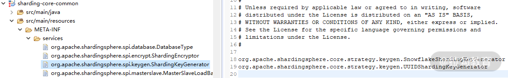
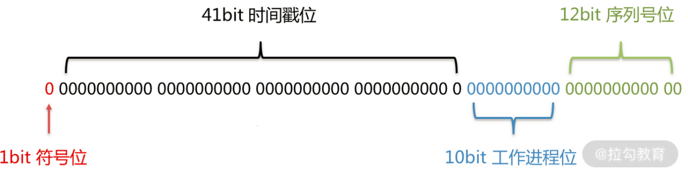

- 00 如何正确学习一款分库分表开源框架？.md.html
- 01 从理论到实践：如何让分库分表真正落地？.md.html
- 02 顶级项目：ShardingSphere 是一款什么样的 Apache 开源软件？.md.html
- 03 规范兼容：JDBC 规范与 ShardingSphere 是什么关系？.md.html
- 04 应用集成：在业务系统中使用 ShardingSphere 的方式有哪些？.md.html
- 05 配置驱动：ShardingSphere 中的配置体系是如何设计的？.md.html
- 06 数据分片：如何实现分库、分表、分库+分表以及强制路由？（上）.md.html
- 07 数据分片：如何实现分库、分表、分库+分表以及强制路由？（下）.md.html
- 08 读写分离：如何集成分库分表+数据库主从架构？.md.html
- 09 分布式事务：如何使用强一致性事务与柔性事务？.md.html
- 10 数据脱敏：如何确保敏感数据的安全访问？.md.html
- 11 编排治理：如何实现分布式环境下的动态配置管理？.md.html
- 12 从应用到原理：如何高效阅读 ShardingSphere 源码？.md.html
- 13 微内核架构：ShardingSphere 如何实现系统的扩展性？.md.html
- 14 分布式主键：ShardingSphere 中有哪些分布式主键实现方式？.md.html
- 15 解析引擎：SQL 解析流程应该包括哪些核心阶段？（上）.md.html
- 16 解析引擎：SQL 解析流程应该包括哪些核心阶段？（下）.md.html
- 17 路由引擎：如何理解分片路由核心类 ShardingRouter 的运作机制？.md.html
- 18 路由引擎：如何实现数据访问的分片路由和广播路由？.md.html
- 19 路由引擎：如何在路由过程中集成多种路由策略和路由算法？.md.html
- 20 改写引擎：如何理解装饰器模式下的 SQL 改写实现机制？.md.html
- 21 执行引擎：分片环境下 SQL 执行的整体流程应该如何进行抽象？.md.html
- 22 执行引擎：如何把握 ShardingSphere 中的 Executor 执行模型？（上）.md.html
- 23 执行引擎：如何把握 ShardingSphere 中的 Executor 执行模型？（下）.md.html
- 24 归并引擎：如何理解数据归并的类型以及简单归并策略的实现过程？.md.html
- 25 归并引擎：如何理解流式归并和内存归并在复杂归并场景下的应用方式？.md.html
- 26 读写分离：普通主从架构和分片主从架构分别是如何实现的？.md.html
- 27 分布式事务：如何理解 ShardingSphere 中对分布式事务的抽象过程？.md.html
- 28 分布式事务：ShardingSphere 中如何集成强一致性事务和柔性事务支持？（上）.md.html
- 29 分布式事务：ShardingSphere 中如何集成强一致性事务和柔性事务支持？（下）.md.html
- 30 数据脱敏：如何基于改写引擎实现低侵入性数据脱敏方案？.md.html
- 31 配置中心：如何基于配置中心实现配置信息的动态化管理？.md.html
- 32 注册中心：如何基于注册中心实现数据库访问熔断机制？.md.html
- 33 链路跟踪：如何基于 Hook 机制以及 OpenTracing 协议实现数据访问链路跟踪？.md.html
- 34 系统集成：如何完成 ShardingSphere 内核与 Spring+SpringBoot 的无缝整合？.md.html
- 35 结语：ShardingSphere 总结及展望.md.html
- 捐赠
14 分布式主键：ShardingSphere 中有哪些分布式主键实现方式？
本课时我将为你讲解 ShardingSphere 中的分布式主键实现方式。
在传统数据库软件开发过程中，主键自动生成技术是基本需求。各个数据库对该需求也提供了相应的支持，比如 MySQL 的自增键，Oracle 的自增序列等。而在分片场景下，问题就变得有点复杂，我们不能依靠单个实例上的自增键来实现不同数据节点之间的全局唯一主键，这时分布式主键的需求就应运而生。ShardingSphere 作为一款优秀的分库分表开源软件，同样提供了分布式主键的实现机制，今天，我们就对这一机制的基本原理和实现方式展开讨论。
ShardingSphere 中的自动生成键方案
在介绍 ShardingSphere 提供的具体分布式主键实现方式之前，我们有必要先对框架中抽象的自动生成键 GeneratedKey 方案进行讨论，从而帮助你明确分布式主键的具体使用场景和使用方法。
ShardingSphere 中的 GeneratedKey
GeneratedKey 并不是 ShardingSphere 所创造的概念。如果你熟悉 Mybatis 这种 ORM 框架，对它就不会陌生。事实上，我们在《数据分片：如何实现分库、分表、分库+分表以及强制路由（上）？》中已经介绍了在 Mybatis 中嵌入 GeneratedKey 的实现方法。通常，我们会在 Mybatis 的 Mapper 文件中设置 useGeneratedKeys 和 keyProperty 属性：
<insert id="addEntity" useGeneratedKeys="true" keyProperty="recordId" >
INSERT INTO health_record (user_id, level_id, remark)
VALUES (#{userId,jdbcType=INTEGER}, #{levelId,jdbcType=INTEGER},
#{remark,jdbcType=VARCHAR})
</insert>
在执行这个 insert 语句时，返回的对象中自动包含了生成的主键值。当然，这种方式能够生效的前提是对应的数据库本身支持自增长的主键。
当我们使用 ShardingSphere 提供的自动生成键方案时，开发过程以及效果和上面描述的完全一致。在 ShardingSphere 中，同样实现了一个 GeneratedKey 类。请注意，该类位于 sharding-core-route 工程下。我们先看该类提供的 getGenerateKey 方法：
public static Optional<GeneratedKey> getGenerateKey(final ShardingRule shardingRule, final TableMetas tableMetas, final List<Object> parameters, final InsertStatement insertStatement) {
//找到自增长列
Optional<String> generateKeyColumnName = shardingRule.findGenerateKeyColumnName(insertStatement.getTable().getTableName());
if (!generateKeyColumnName.isPresent()) {
return Optional.absent();
}
//判断自增长类是否已生成主键值
return Optional.of(containsGenerateKey(tableMetas, insertStatement, generateKeyColumnName.get())
? findGeneratedKey(tableMetas, parameters, insertStatement, generateKeyColumnName.get()) : createGeneratedKey(shardingRule, insertStatement, generateKeyColumnName.get()));
}
这段代码的逻辑在于先从 ShardingRule 中找到主键对应的 Column，然后判断是否已经包含主键：如果是则找到该主键，如果不是则生成新的主键。今天，我们的重点是分布式主键的生成，所以我们直接来到 createGeneratedKey 方法：
private static GeneratedKey createGeneratedKey(final ShardingRule shardingRule, final InsertStatement insertStatement, final String generateKeyColumnName) {
GeneratedKey result = new GeneratedKey(generateKeyColumnName, true);
for (int i = 0; i < insertStatement.getValueListCount(); i++) {
result.getGeneratedValues().add(shardingRule.generateKey(insertStatement.getTable().getTableName()));
}
return result;
}
在 GeneratedKey 中存在一个类型为 LinkedList 的 generatedValues 变量，用于保存生成的主键，但实际上，生成主键的工作转移到了 ShardingRule 的 generateKey 方法中，我们跳转到 ShardingRule 类并找到这个 generateKey 方法：
public Comparable<?> generateKey(final String logicTableName) {
Optional<TableRule> tableRule = findTableRule(logicTableName);
if (!tableRule.isPresent()) {
throw new ShardingConfigurationException("Cannot find strategy for generate keys.");
}
//从TableRule中获取ShardingKeyGenerator并生成分布式主键
ShardingKeyGenerator shardingKeyGenerator = null == tableRule.get().getShardingKeyGenerator() ? defaultShardingKeyGenerator : tableRule.get().getShardingKeyGenerator();
return shardingKeyGenerator.generateKey();
}
首先，根据传入的 logicTableName 找到对应的 TableRule，基于 TableRule 找到其包含的 ShardingKeyGenerator，然后通过 ShardingKeyGenerator 的 generateKey 来生成主键。从设计模式上讲，ShardingRule 也只是一个外观类，真正创建 ShardingKeyGenerator 的过程应该是在 TableRule 中。而这里的 ShardingKeyGenerator 显然就是真正生成分布式主键入口，让我们来看一下。
ShardingKeyGenerator
接下来我们分析 ShardingKeyGenerator 接口，从定义上看，该接口继承了 TypeBasedSPI 接口：
public interface ShardingKeyGenerator extends TypeBasedSPI {
Comparable<?> generateKey();
}
来到 TableRule 中，在它的一个构造函数中找到了 ShardingKeyGenerator 的创建过程：
shardingKeyGenerator = containsKeyGeneratorConfiguration(tableRuleConfig)
? new ShardingKeyGeneratorServiceLoader().newService(tableRuleConfig.getKeyGeneratorConfig().getType(), tableRuleConfig.getKeyGeneratorConfig().getProperties()) : null;
这里有一个 ShardingKeyGeneratorServiceLoader 类，该类定义如下：
public final class ShardingKeyGeneratorServiceLoader extends TypeBasedSPIServiceLoader<ShardingKeyGenerator> {
static {
NewInstanceServiceLoader.register(ShardingKeyGenerator.class);
}
public ShardingKeyGeneratorServiceLoader() {
super(ShardingKeyGenerator.class);
}
}
回顾上一课时的内容，我们不难理解 ShardingKeyGeneratorServiceLoader 类的作用。ShardingKeyGeneratorServiceLoader 继承了 TypeBasedSPIServiceLoader 类，并在静态方法中通过 NewInstanceServiceLoader 注册了类路径中所有的 ShardingKeyGenerator。然后，ShardingKeyGeneratorServiceLoader 的 newService 方法基于类型参数通过 SPI 创建实例，并赋值 Properties 属性。
通过继承 TypeBasedSPIServiceLoader 类来创建一个新的 ServiceLoader 类，然后在其静态方法中注册相应的 SPI 实现，这是 ShardingSphere 中应用微内核模式的常见做法，很多地方都能看到类似的处理方法。
我们在 sharding-core-common 工程的 META-INF/services 目录中看到了具体的 SPI 定义：

分布式主键 SPI 配置
可以看到，这里有两个 ShardingKeyGenerator，分别是 SnowflakeShardingKeyGenerator 和 UUIDShardingKeyGenerator，它们都位于org.apache.shardingsphere.core.strategy.keygen 包下。
ShardingSphere 中的分布式主键实现方案
在 ShardingSphere 中，ShardingKeyGenerator 接口存在一批实现类。除了前面提到的 SnowflakeShardingKeyGenerator 和UUIDShardingKeyGenerator，还实现了 LeafSegmentKeyGenerator 和 LeafSnowflakeKeyGenerator 类，但这两个类的实现过程有些特殊，我们一会再具体展开。
UUIDShardingKeyGenerator
我们先来看最简单的 ShardingKeyGenerator，即 UUIDShardingKeyGenerator。UUIDShardingKeyGenerator 的实现非常容易理解，直接采用 UUID.randomUUID() 的方式产生分布式主键：
public final class UUIDShardingKeyGenerator implements ShardingKeyGenerator {
private Properties properties = new Properties();
@Override
public String getType() {
return "UUID";
}
@Override
public synchronized Comparable<?> generateKey() {
return UUID.randomUUID().toString().replaceAll("-", "");
}
}
SnowflakeShardingKeyGenerator
再来看 SnowFlake（雪花）算法，SnowFlake 是 ShardingSphere 默认的分布式主键生成策略。它是 Twitter 开源的分布式 ID 生成算法，其核心思想是使用一个 64bit 的 long 型数字作为全局唯一 ID，且 ID 引入了时间戳，基本上能够保持自增。SnowFlake 算法在分布式系统中的应用十分广泛，SnowFlake 算法中 64bit 的详细结构存在一定的规范：

64bit 的 ID 结构图
在上图中，我们把 64bit 分成了四个部分：
- 符号位
第一个部分即第一个 bit，值为 0，没有实际意义。
- 时间戳位
第二个部分是 41 个 bit，表示的是时间戳。41 位的时间戳可以容纳的毫秒数是 2 的 41 次幂，一年所使用的毫秒数是365 * 24 * 60 * 60 * 1000，即 69.73 年。 也就是说，ShardingSphere 的 SnowFlake 算法的时间纪元从 2016 年 11 月 1 日零点开始，可以使用到 2086 年 ，相信能满足绝大部分系统的要求。
- 工作进程位
第三个部分是 10 个 bit，表示工作进程位，其中前 5 个 bit 代表机房 id，后 5 个 bit 代表机器id。
- 序列号位
第四个部分是 12 个 bit，表示序号，也就是某个机房某台机器上在一毫秒内同时生成的 ID 序号。如果在这个毫秒内生成的数量超过 4096（即 2 的 12 次幂），那么生成器会等待下个毫秒继续生成。
因为 SnowFlake 算法依赖于时间戳，所以还需要考虑时钟回拨这种场景。所谓时钟回拨，是指服务器因为时间同步，导致某一部分机器的时钟回到了过去的时间点。显然，时间戳的回滚会导致生成一个已经使用过的 ID，因此默认分布式主键生成器提供了一个最大容忍的时钟回拨毫秒数。如果时钟回拨的时间超过最大容忍的毫秒数阈值，则程序报错；如果在可容忍的范围内，默认分布式主键生成器会等待时钟同步到最后一次主键生成的时间后再继续工作。ShardingSphere 中最大容忍的时钟回拨毫秒数的默认值为 0，可通过属性设置。
了解了 SnowFlake 算法的基本概念之后，我们来看 SnowflakeShardingKeyGenerator 类的具体实现。首先在 SnowflakeShardingKeyGenerator 类中存在一批常量的定义，用于维护 SnowFlake 算法中各个 bit 之间的关系，同时还存在一个 TimeService 用于获取当前的时间戳。而 SnowflakeShardingKeyGenerator 的核心方法 generateKey 负责生成具体的 ID，我们这里给出详细的代码，并为每行代码都添加注释：
@Override
public synchronized Comparable<?> generateKey() {
//获取当前时间戳
long currentMilliseconds = timeService.getCurrentMillis();
//如果出现了时钟回拨，则抛出异常或进行时钟等待
if (waitTolerateTimeDifferenceIfNeed(currentMilliseconds)) {
currentMilliseconds = timeService.getCurrentMillis();
}
//如果上次的生成时间与本次的是同一毫秒
if (lastMilliseconds == currentMilliseconds) {
//这个位运算保证始终就是在4096这个范围内，避免你自己传递的sequence超过了4096这个范围
if (0L == (sequence = (sequence + 1) & SEQUENCE_MASK)) {
//如果位运算结果为0，则需要等待下一个毫秒继续生成
currentMilliseconds = waitUntilNextTime(currentMilliseconds);
}
} else {//如果不是，则生成新的sequence
vibrateSequenceOffset();
sequence = sequenceOffset;
}
lastMilliseconds = currentMilliseconds;
//先将当前时间戳左移放到完成41个bit，然后将工作进程为左移到10个bit，再将序号为放到最后的12个bit
//最后拼接起来成一个64 bit的二进制数字
return ((currentMilliseconds - EPOCH) << TIMESTAMP_LEFT_SHIFT_BITS) | (getWorkerId() << WORKER_ID_LEFT_SHIFT_BITS) | sequence;
}
可以看到这里综合考虑了时钟回拨、同一个毫秒内请求等设计要素，从而完成了 SnowFlake 算法的具体实现。
LeafSegmentKeyGenerator 和 LeafSnowflakeKeyGenerator
事实上，如果实现类似 SnowflakeShardingKeyGenerator 这样的 ShardingKeyGenerator 是比较困难的，而且也属于重复造轮子。因此，尽管 ShardingSphere 在 4.X 版本中也提供了 LeafSegmentKeyGenerator 和 LeafSnowflakeKeyGenerator 这两个 ShardingKeyGenerator 的完整实现类。但在正在开发的 5.X 版本中，这两个实现类被移除了。
目前，ShardingSphere 专门提供了 OpenSharding 这个代码仓库来存放新版本的 LeafSegmentKeyGenerator 和 LeafSnowflakeKeyGenerator。新版本的实现类直接采用了第三方美团提供的 Leaf 开源实现。
Leaf 提供两种生成 ID 的方式，一种是号段（Segment）模式，一种是前面介绍的 Snowflake 模式。无论使用哪种模式，我们都需要提供一个 leaf.properties 文件，并设置对应的配置项。无论是使用哪种方式，应用程序都需要设置一个 leaf.key：
# for keyGenerator key
leaf.key=sstest
# for LeafSnowflake
leaf.zk.list=localhost:2181
如果使用号段模式，需要依赖于一张数据库表来存储运行时数据，因此需要在 leaf.properties 文件中添加数据库的相关配置：
# for LeafSegment
leaf.jdbc.url=jdbc:mysql://127.0.0.1:3306/test?serverTimezone=UTC&useSSL=false
leaf.jdbc.username=root
leaf.jdbc.password=123456
基于这些配置，我们就可以创建对应的 DataSource，并进一步创建用于生成分布式 ID 的 IDGen 实现类，这里创建的是基于号段模式的 SegmentIDGenImpl 实现类：
//通过DruidDataSource构建数据源并设置属性
DruidDataSource dataSource = new DruidDataSource();
dataSource.setUrl(properties.getProperty(LeafPropertiesConstant.LEAF_JDBC_URL));
dataSource.setUsername(properties.getProperty(LeafPropertiesConstant.LEAF_JDBC_USERNAME));
dataSource.setPassword(properties.getProperty(LeafPropertiesConstant.LEAF_JDBC_PASSWORD));
dataSource.init();
//构建数据库访问Dao组件
IDAllocDao dao = new IDAllocDaoImpl(dataSource);
//创建IDGen实现类
this.idGen = new SegmentIDGenImpl();
//将Dao组件绑定到IDGen实现类
((SegmentIDGenImpl) this.idGen).setDao(dao);
this.idGen.init();
this.dataSource = dataSource;
一旦我们成功创建了 IDGen 实现类，可以通过该类来生成目标 ID，LeafSegmentKeyGenerator 类中包含了所有的实现细节：
Result result = this.idGen.get(properties.getProperty(LeafPropertiesConstant.LEAF_KEY));
return result.getId();
介绍完 LeafSegmentKeyGenerator 之后，我们再来看 LeafSnowflakeKeyGenerator。LeafSnowflakeKeyGenerator 的实现依赖于分布式协调框架 Zookeeper，所以在配置文件中需要指定 Zookeeper 的目标地址：
# for LeafSnowflake
leaf.zk.list=localhost:2181
创建用于 LeafSnowflake 的 IDGen 实现类 SnowflakeIDGenImpl 相对比较简单，我们直接在构造函数中设置 Zookeeper 地址就可以了：
IDGen idGen = new SnowflakeIDGenImpl(properties.getProperty(LeafPropertiesConstant.LEAF_ZK_LIST), 8089);
同样，通过 IDGen 获取模板 ID 的方式是一致的：
idGen.get(properties.getProperty(LeafPropertiesConstant.LEAF_KEY)).getId();
显然，基于 Leaf 框架实现号段模式和 Snowflake 模式下的分布式 ID 生成方式非常简单，Leaf 框架为我们屏蔽了内部实现的复杂性。
从源码解析到日常开发
相比 ShardingSphere 中其他架构设计上的思想和实现方案，分布式主键非常独立，所以今天介绍的各种分布式主键的实现方式完全可以直接套用到日常开发过程中。无论是 ShardingSphere 自身实现的 SnowflakeShardingKeyGenerator，还是基于第三方框架实现的 LeafSegmentKeyGenerator 和 LeafSnowflakeKeyGenerator，都为我们使用分布式主键提供了直接的解决方案。当然，我们也可以在这些实现方案的基础上，进一步挖掘同类型的其他方案。
总结
在分布式系统的开发过程中，分布式主键是一种基础需求。而对于与数据库相关的操作而言，我们往往需要将分布式主键与数据库的主键自动生成机制关联起来。在今天的课程中，我们就从 ShardingSphere 的自动生成键方案说起，引出了分布式主键的各种实现方案。这其中包括最简单的 UUID，也包括经典的雪花算法，以及雪花算法的改进方案 LeafSegment 和 LeafSnowflake 算法。
这里给你留一道思考题：ShardingSphere 中如何分别实现基于号段的 Leaf 以及基于 Snowflake 的 Leaf 来生成分布式 ID？
从下一课时开始，我们将进入到 ShardingSphere 分片引擎实现原理的讲解过程中，我将首先为你介绍解析引擎的执行流程，记得按时来听课。
© 2019 - 2023 Liangliang Lee. Powered by gin and hexo-theme-book.